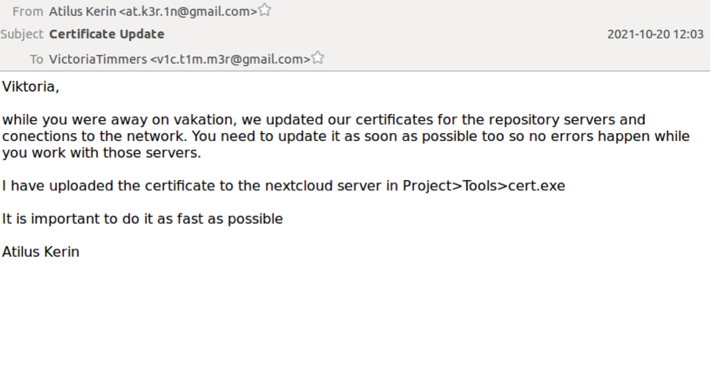
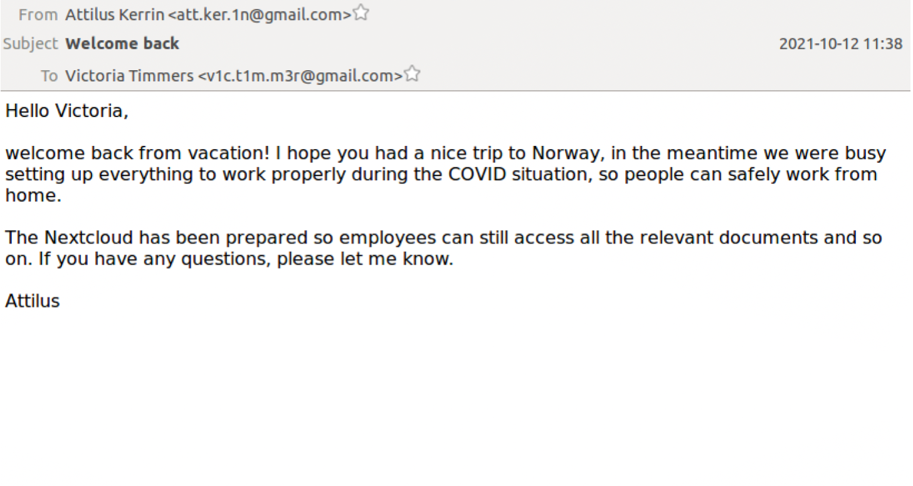
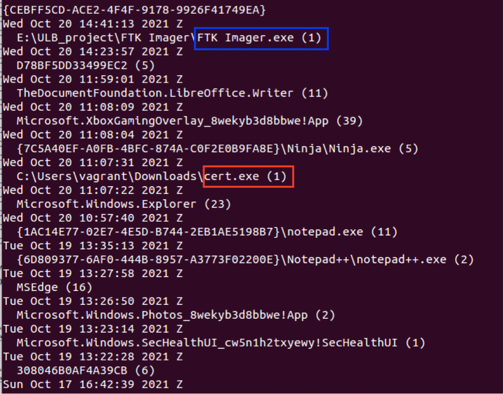
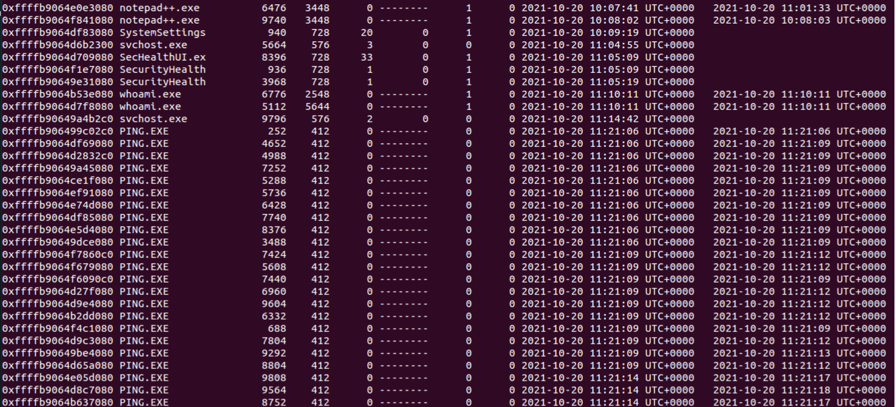
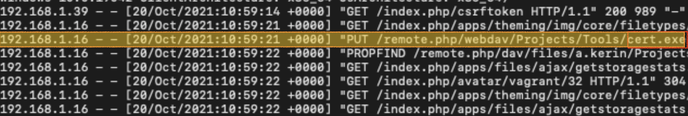
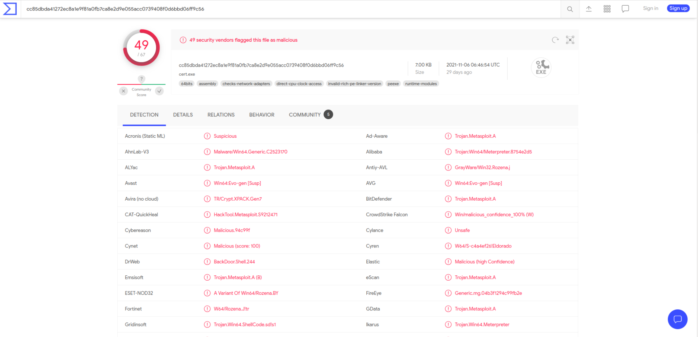

Your browser doesn't support the features required by impress.js, so you are presented with a simplified version of this presentation.
For the best experience please use the latest Chrome, Safari or Firefox browser.
GAST Incident
Forensics Analysis
Arkady Mospan
Overview
- Recall
- Timeline
- Evidence
- Conclusion
- Improvement
Recall
- October 20 2021
- Message from hacker's group
- Employee (Victoria Timmers)
- Working from home
- Confidential info encrypted
- Computer isolated
- Forensics analysis
Timeline
Before D-Day
Credentials
03/10/2020
Credentials given in plain text via mail
Not changed (as advised)
Alerts
28/06/2021
07/07/2021
Several Google alerts "account activated on Linux device"
Ignored
On 20 Oct 2021
Upload
11:59
Upload of "cert.exe" (malicious file)
Phishing e-mail
12:03
Phishing e-mail received. "Download and execute "cert.exe""
Download
12:07
Ms. Timmers downloads "cert.exe"
Execution
12:07
Ms. Timmers executes "cert.exe"
Network Discovery
12:21
Attack used to get an idea of the company's network.
Encryption
14:50
Some of Ms. Timmers' files were encrypted.
Ransom Mail
16:38
Ransom mail received.
Imaging
16:44
Technician arrives at the workstation and images disk and memory.
Timeline
Evidence
Phishing


Recent Programs

Network Discovery

Malware Upload

Malware Nature

Evidence
Conclusion
Hacker
- Attacker waited for perfect timing
- Had access to server
- Ms. Timmers didn't know
- "If it's on the server it's okay"
Victim
- Ms. Timmers was being negligent
- Still seems good faith
- Meeting of coincidences
- Coming back from holidays
- Special days working from home
- Few wouldn't have fallen into trap
Conclusion
Improvement
Sharing Info and Alerts
- Not in plain text (email)
- If not possible: change ASAP
- Don't ignore alerts
- Not for nothing
- Big companies try to protect clients
Phishing
- Be aware of phishing
- Attention to details
- Spelling errors
- Check addresses
- Twice attention if asked
- Download
- Execute
- ... Or both !
Improvement